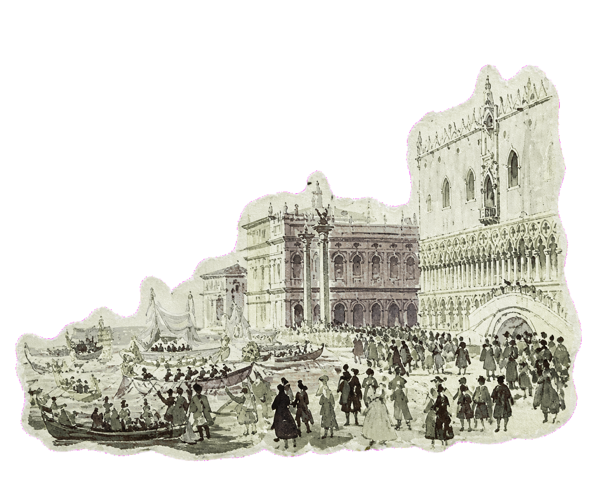

Quantitative research studio · Hong Kong / Worldwide
Measure the
unseen.
We build intelligent systems for people who believe the future belongs to those who can read its patterns.
Enter the signal↓Field notes / systematic thought
Markets are not still.
Neither are our models.
We read movement across instruments, regimes and horizons—then build systems that adapt without abandoning discipline.
Explore our strategies ↗


The quantified view
Signal over
noise.
Our systems read thousands of market relationships in motion, turning complexity into a clear, disciplined point of view.
Model confidence
87.6%Risk / reward
3.2×Adaptive allocationSystem state & attribution

Trend breadth74/ 100
Liquidity68/ 100
Correlation stress31/ 100
Crowding42/ 100
A classical lens / a computational eye
Old worlds,
new signals.
We borrow the patience of the old masters and apply it to the speed of modern markets: observe deeply, reduce noise, act with intent.
How we work
 01
01Find the signal
We identify durable relationships hidden beneath market noise.
 02
02Build the model
Research systems turn uncertainty into measured, explainable decisions.
Adapt with discipline
Strategies evolve with the market while risk remains firmly governed.
A conversation worth beginning
Build for the
long horizon.
For institutional partnerships, research collaboration and strategic enquiries.
hello@aura01.studio ↗